| 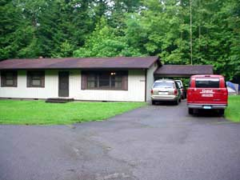 |
Life at the research
stations was pretty busy, too. Everyone had to share the limited
space and the chores. Thanks to Drs. Ely and Wilson, the meals were
fantastic! Discover Life in America provided the housing, complete
with a computer with internet access. Every available space was turned
into work stations and specimen storage, creating some pretty "maze-like"
pathways through the house.
|
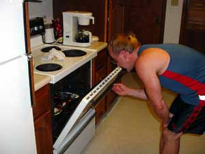
|
| 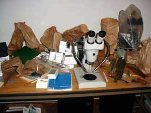 |
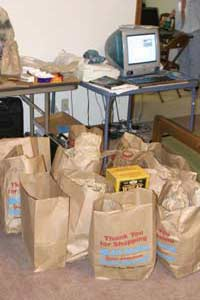
|
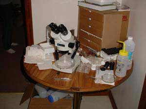 |
|
"Privacy" 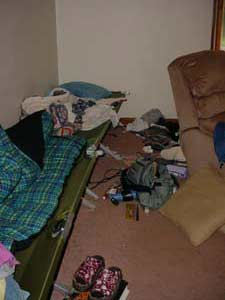
|
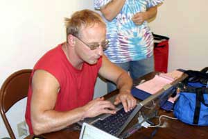
The Hobo data is downloaded
each day by Dr. Ely.
|
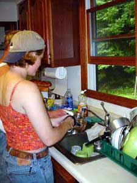
Chore Time |
| 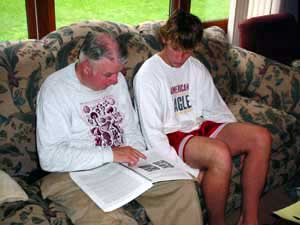
Dr. Keller shares
his knowledge of myxomycetes with Tommy.
|
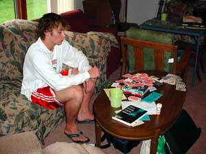
Tommy in the "entertainment"
area...where a nightly game of cards is played.
|
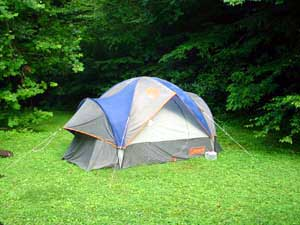
The "guest quarters"
expand the research station with another sleeping room for Stan and Trish.
|